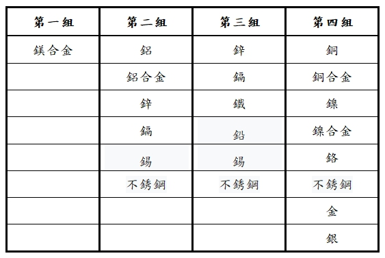

4.3 內容 <<
Previous Next >> 4.5
4.4 內容
表面處理與塗料
選擇材料(過去的選擇)前所做的選擇，都會直接與該材料的表面處理有所耦合，幾乎所有工程上的零件都必須經過表面處理，但還是有些例外，像是雕塑(藝術工作)或是故意不經過處理讓其有腐蝕外觀的建築立面(外牆)，所以設計者必須為每個零件指定材料和表面處理的設計。
表面處理（塗料）的要求：
- 阻止(減緩)腐蝕 : (當產品運送或儲存在製造商、組合商、顧客)，或者是產品已經在顧客手上使用時
- 提供陽極保護 : 當金屬和不同金屬接觸，有時會產生交互作用。基於此，不同金屬也必須有足夠的防護來抵抗電的腐蝕，這都是通過插入惰性材料，或與不同材料(A)相容(兼容)的材料(B)來實現的。
下列的表格依照組別列出了相似的金屬
一組材料與同一組另一種材料之間的接觸應視為相似(同類)，
反過來說，當不同組材料之間接觸時會設置臨界的電解階段。

注意:使用鉛，鎘以及表面處理過的材料實際上都有非常嚴重的環境問題，
由於各種法令和法律的限制，其中許多材料被禁止。
請參考RoHS (Restriction of Hazardous Substances)要求，
作為這些法律的例子，這些法律限制了上面表格多種表面處理材料的應用。
3.外觀(美學)
4.對於兩個零件連接結合的部分，實際上會省略防護塗層
4.3 內容 <<
Previous Next >> 4.5